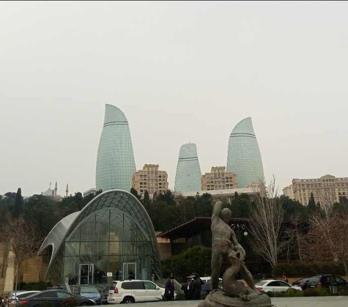

Why Visit Azerbaijan?
Azerbaijan, the land of fire, is a one-of-a-kind destination that refuses to be forgotten. The country is a unique crossroads of culture and history, filled with a wide range of attractions for every type of traveller.
Highlights

Heydar Aliyev Centre
The Heydar Aliyev Center is known for its unique architecture and rounded, flowing design that avoids sharp corners.

Baku Old Area
The vibrant capital city that perfectly blends the old and the new.

Flames Towers
The Flame Towers' design makes reference to the area's long tradition of fire worship as well as the popular origin of the word "Azerbaijan," which is sometimes translated as "the land of fire."